A spring living room does not need new furniture. It needs lighter fabrics, cleaner windows and one good bunch of flowers.
Most of the work is taking things away: the heavy throws, the dark pillow covers and the clutter on the coffee table.
These 29 ideas cover pillows, coffee tables, mantels, gallery walls and windows, with the sizes and swaps that make each one easy to copy. Read the five rules first.

Five Rules for a Spring Living Room
- Swap before you add. Trade winter covers and throws for linen and cotton before you buy anything new.
- Choose one dominant color. Soft green, blush or butter yellow works. Let the rest stay neutral.
- Clear the windows. Hang sheers, wash the glass and move furniture away from it.
- Count flowers in odd numbers. Three stems in a small vase look better than four, and one big bunch beats several small ones.
- Leave breathing room. A coffee table with two or three objects looks styled. Six looks like a shelf.
Sofas, Pillows and Throws
1. Turn a White Sofa Into a Blank Canvas
A white sofa is a blank canvas for spring. Four pillows in pale pink, powder blue and cream are all it needs.
Choose covers with zippers so you can wash them. Pastels show every mark.
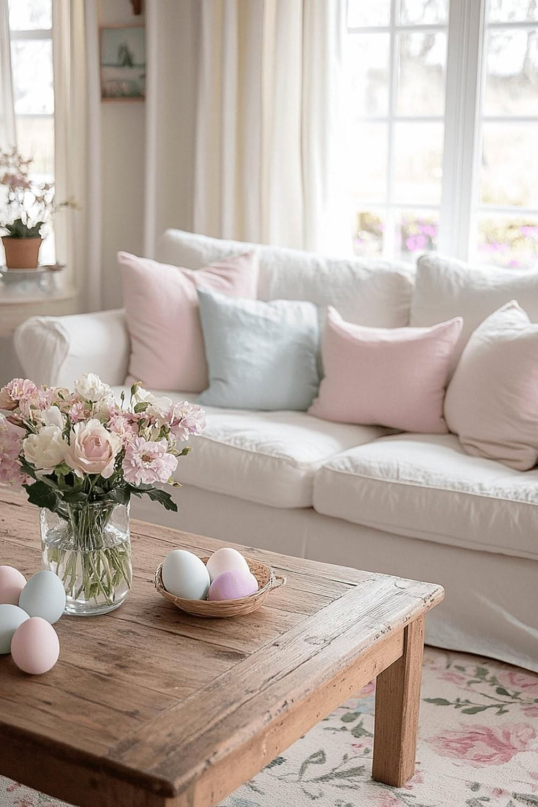
2. Mix One Print With Two Solids
Mix one print with two solids. A small floral pillow beside a sage cover and a blush one looks pulled together.
Set the largest pillow, about 22 inches, at the back and step down to a 12 by 20 lumbar in front.
A pink throw over the arm repeats the blush without adding a fourth color.
Fluff the inserts every few days so the pillows hold their shape.
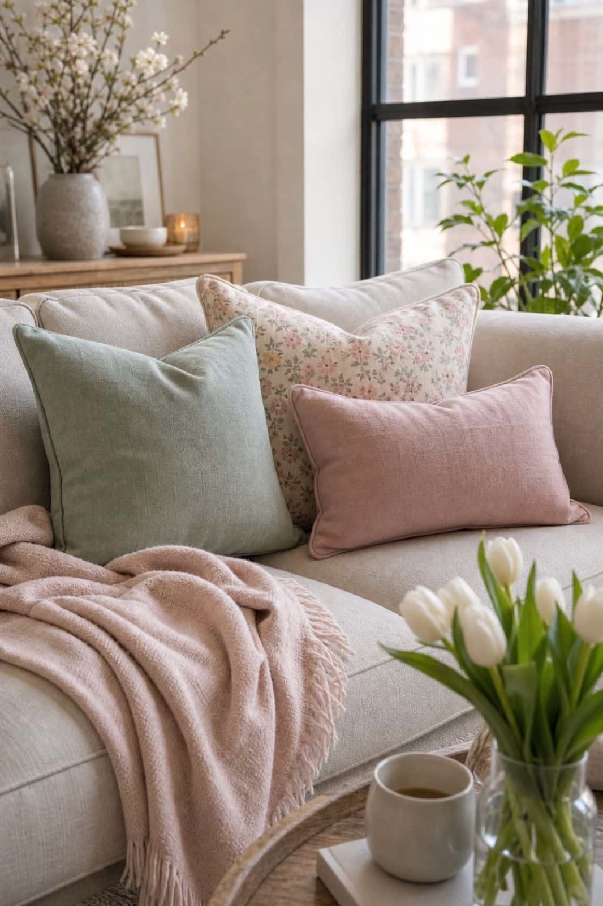
3. Pair a Big Check With a Tiny Floral
Checks and florals mix when the scale differs. Pair a big gingham with a tiny floral and a solid, as on this sofa.
Pull one color from the pillows into the centerpiece so the table ties in. The pink pillows match the blooms here.
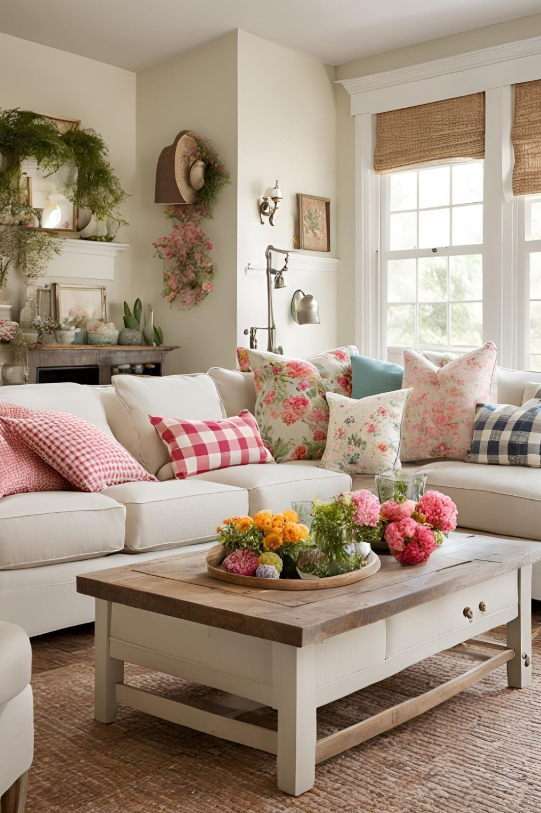
4. Give Each Pillow Its Own Pastel
Four soft shades, one pillow each, make an easy spring rainbow. Choose the same saturation so nothing shouts, as here.
Fold a pale throw over the arm and set a small vase of lily of the valley on the side table. It is toxic to pets, so keep it out of reach.
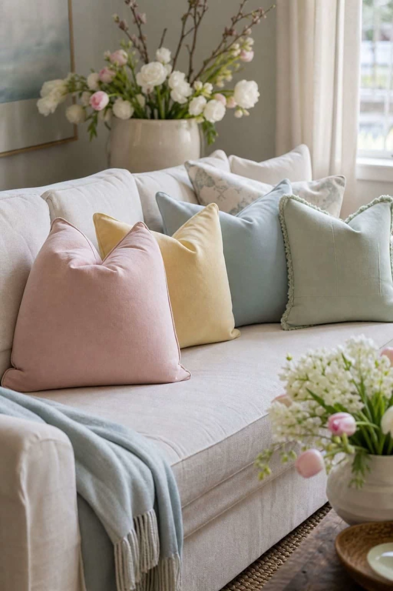
5. Let a Floral Sofa Lead
A floral sofa can be the whole statement. Keep the walls, rug and table plain so the pattern leads.
Use a cotton throw in spring, not wool. It layers without heating you up.
Repeat one color from the print in a pillow. The pink and sage pillows here come straight from the roses and leaves.
Hang a pair of prints in warm wood frames so the wall echoes the sofa.
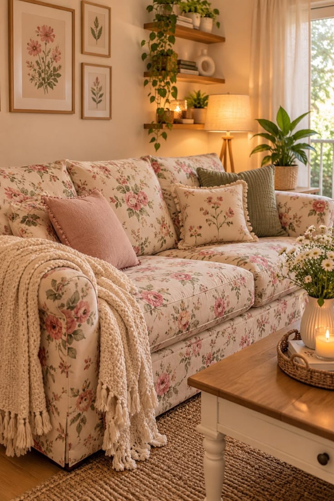
6. Soften a Gray Sofa With Lilac
Gray gets softer in spring with lilac and blush. Choose textures like boucle and chenille so the colors have depth.
Keep a chunky blanket folded over one arm and swap it for a cotton one as the weather warms.
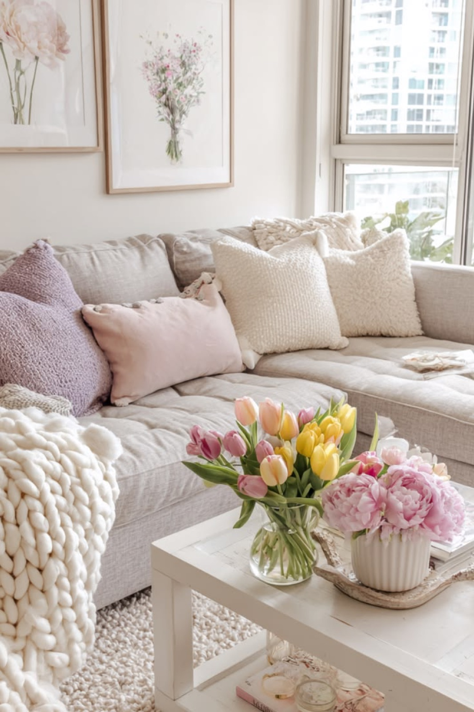
7. Paint Sage and Add a Green Chair
Paint a living room sage and the rest of the palette follows. Add one armchair in the same green against a tan sofa.
Choose a rug with green in its pattern, as here, and the room looks designed from the floor up.
Test paint samples on two walls and check them morning and evening. Sage shifts between gray and mint with the light.
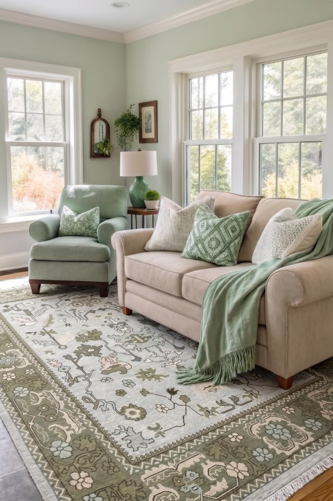
8. Swap in Ruffled Pink Pillows
Ruffled pink pillows are a quick spring swap. Two of them with a quilted throw turn a plain white sofa into the seasonal one.
A quilt over the back or arm adds pattern without a new sofa.
A jute rug under a round pedestal table, as here, adds the second texture. Keep the pillows soft and the rug rough.
A hanging planter by the window adds a second level of green.
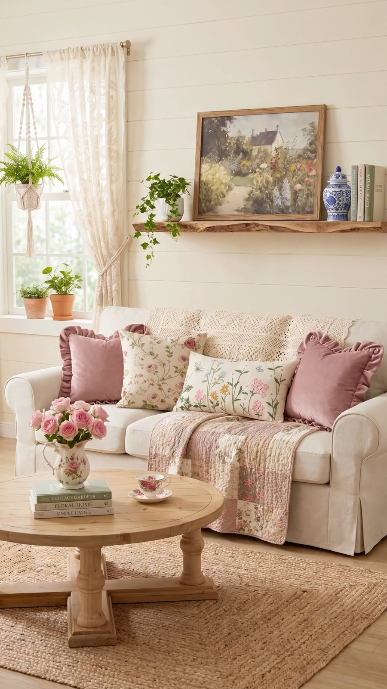
Coffee Tables and Centerpieces
9. Corral Objects on a Woven Tray
Round tables are friendly in small rooms. A woven tray in the center keeps objects from scattering.
A pitcher of tulips, two candles and a small stack of books are enough.
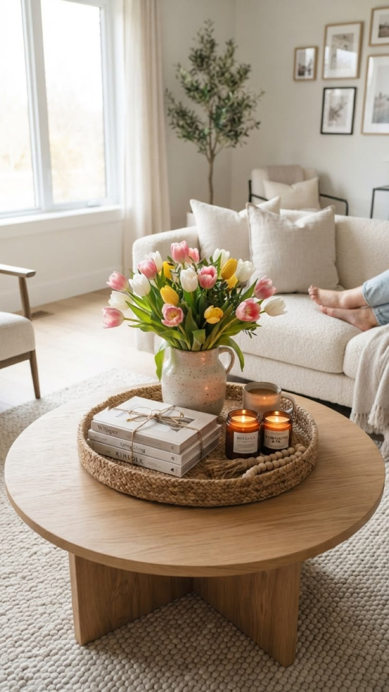
10. Use Yellow as the Accent
Yellow is the easiest spring accent. Use one saturated pillow and two paler ones, as here.
Cut daisies short and put them in a jar so they stay upright and last about a week.
Echo the yellow in framed art above the sofa, as this room does.
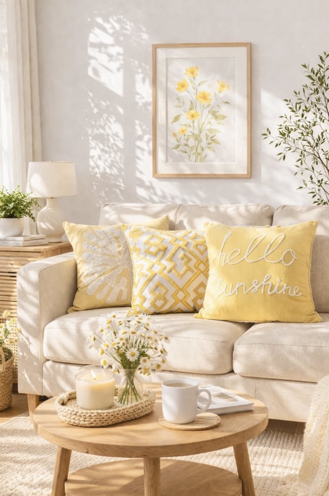
11. Leave Room for a Plate and a Mug
A coffee table is for using. Leave room for a plate and a mug next to the vase.
Peonies last about five days. Keep them cool and out of direct sun.
A woven tray, like this one, keeps the vase from scratching the wood.
Buy peonies in tight bud for the longest show. They open in the room.
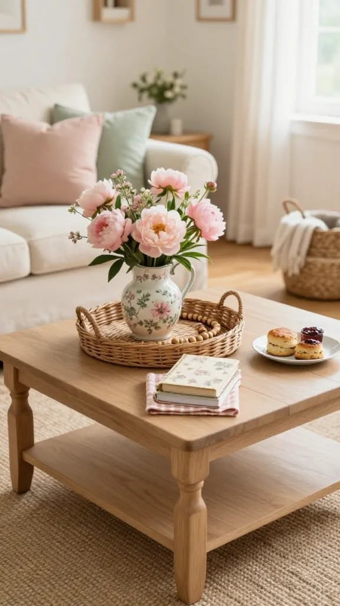
12. Let Flowers Be the Color in a Cream Room
In a cream room the flowers are the color. A mixed bunch in a white vase on the coffee table is plenty.
Hang three prints at the same height and spacing above the sofa, as here, for calm.
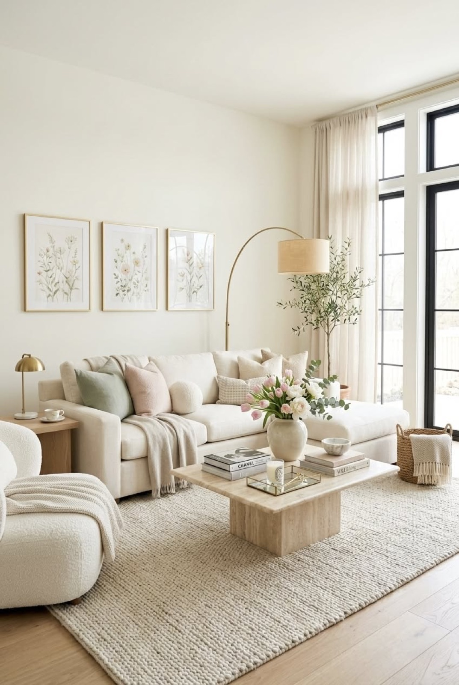
13. Force Branches for Height
Branches add height for pennies. Cut cherry or crabapple stems in late winter and force them in warm water.
Set a low vase of tulips on the table and a tall branch vase on a side table behind, as in this room.
Slit or crush the cut ends so the stems can drink.
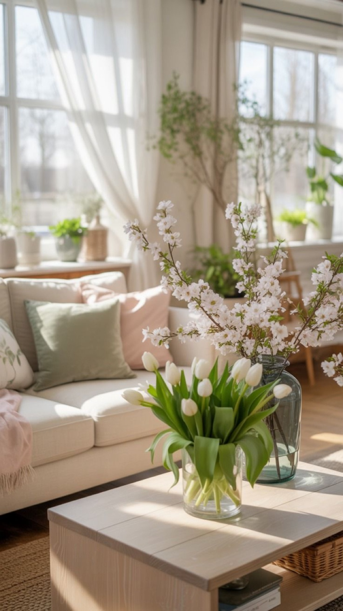
14. Slip a Jar Inside the Basket
A basket works as a vase when you slip a glass or tin inside. The stems stay put and the table stays dry.
Mix white blooms with greenery, as here, so the bunch reads as one soft shape.
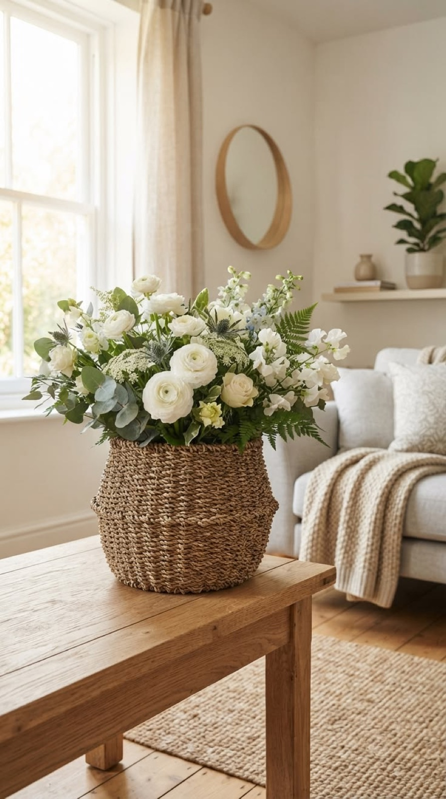
15. Soften a Rough Table
A rough wood table needs soft things on it. Pair candles and a white vase with a stack of books.
Choose unscented candles so they do not fight the flowers.
Keep branches well clear of the flame. Dried blossoms burn easily.
A small woven dish catches coasters and keys.
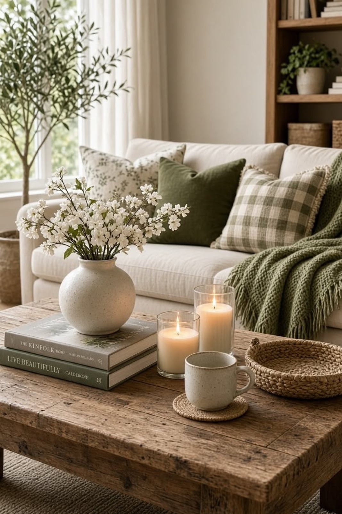
16. Go Bold With Pink and Orange
Not every spring room has to be pastel. A cloud-shaped table, an orange beanbag and tulips make a bolder palette work here.
Add a geometric rug, like this black-and-cream one, to ground all the colors.
Limit the bright colors to three: pink, orange and olive green here.
Keep the walls and sofa plain so the color lives in pieces you can swap.
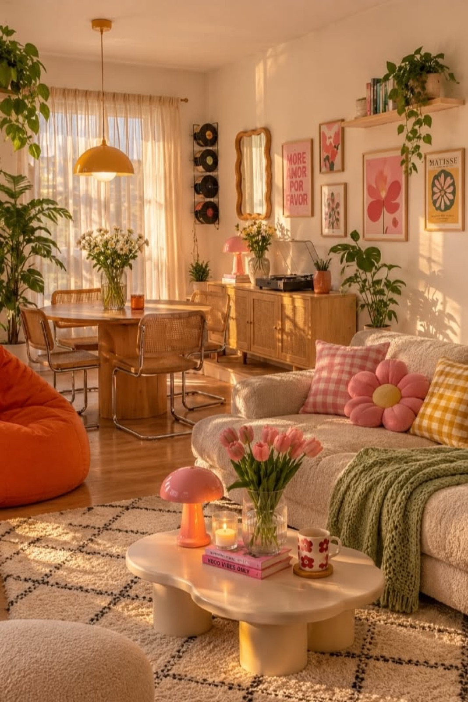
Mantels and Shelves
17. Use the Fireplace as a Vase Stand
An unused fireplace is a great vase stand. Put a tall bunch of tulips on the hearth, as here, and keep it clear of a lit fire.
On the mantel, stay with one print, two small vases and one candle.
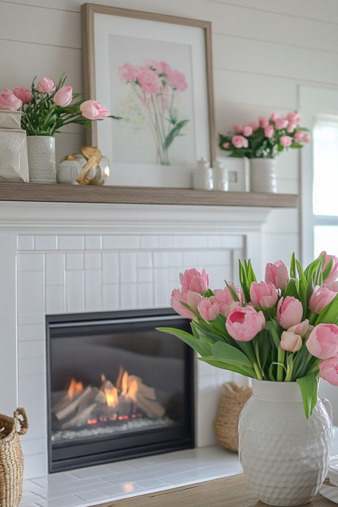
18. Style the Bookcase in Rows
Style a bookcase in rows. Put taller baskets on top, books in the middle and small objects near the bottom.
Limit seasonal pieces to about a third of the shelf so the rest stays everyday, as the bunnies and eggs do here.
Keep bunnies in groups of two or three, not one per shelf.
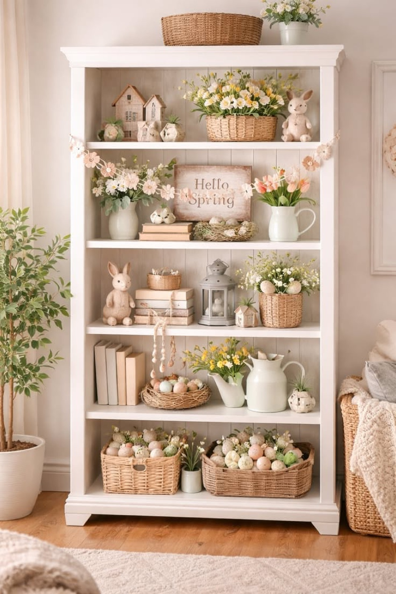
19. Mix Old and New on a Shelf
Mix old and new on a shelf. A small framed painting of a lamb, leaning against the back, adds charm to a modern cabinet.
Vary the heights: books stacked flat, a vase on top and a basket on a higher shelf.
Leave a few inches of the shelf bare. Empty space makes the objects stand out.
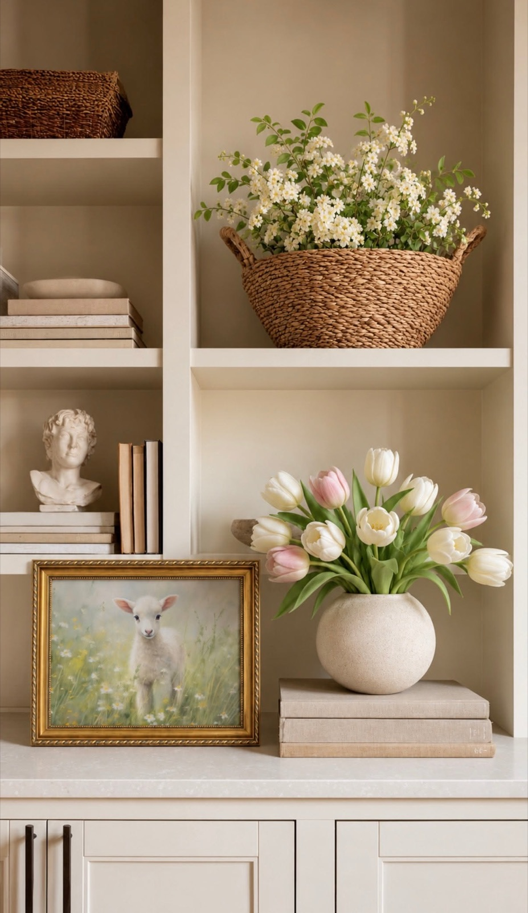
Gallery Walls and Wallpaper
20. Paper One Wall in Botanicals
Wallpaper on one wall changes a whole room. Choose a soft botanical on cream so it works with any sofa.
Hang four matching frames in a 2 by 2 grid with 2 inches between them, as here.
Order a sample and tape it up first. Wallpaper looks different in daylight and lamplight.
Brass sconces beside the grid add light without a lamp.
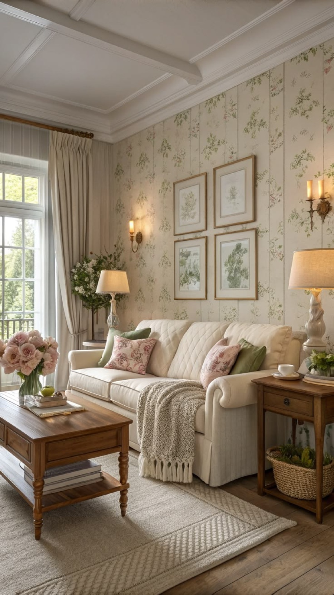
21. Hang Three Small Frames in a Row
Wall panels hold small art well. Three small frames in a row at the same height make a quiet focal point.
Mount a sconce above the center frame, as here, to add light without a lamp.
Use a cord cover painted the wall color so the wiring disappears.
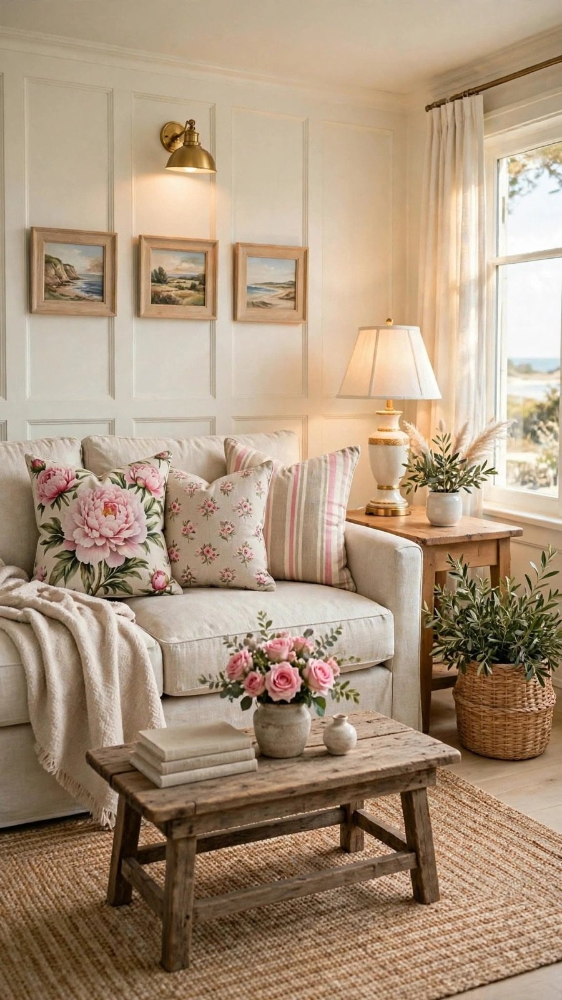
22. Match the Art to a Pillow Color
Match art to a pillow color and the sofa looks styled. Mustard pillows echo the yellow in these prints.
Hang the prints about 6 to 8 inches above the back of the sofa.
A vase of yellow wildflowers by the window carries the color across the room.
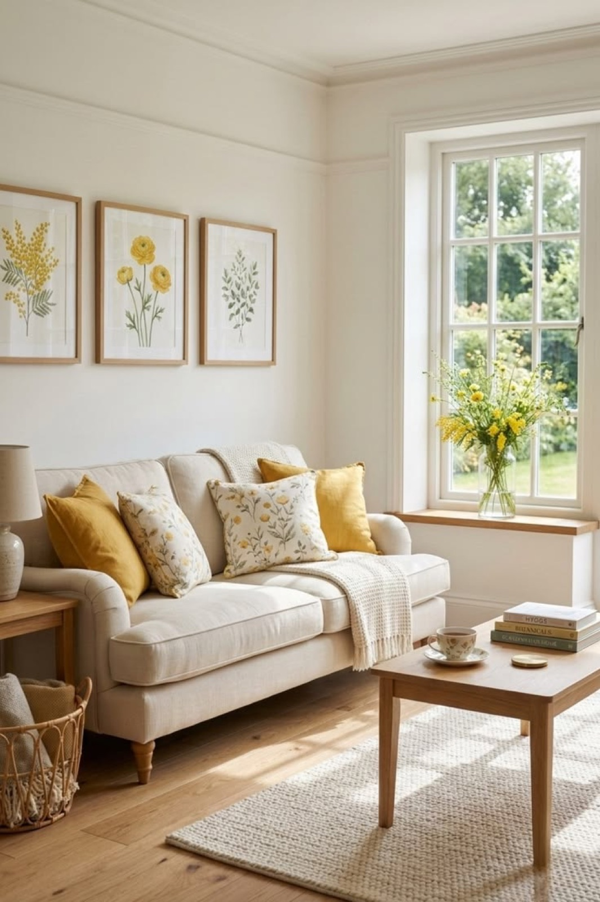
23. Trace Templates Before You Drill
Big gallery walls need a plan. Lay the frames on the floor and trace paper templates before you drill.
Use frames in one wood tone with mixed print sizes and about 2 inches between each, as on this wall.
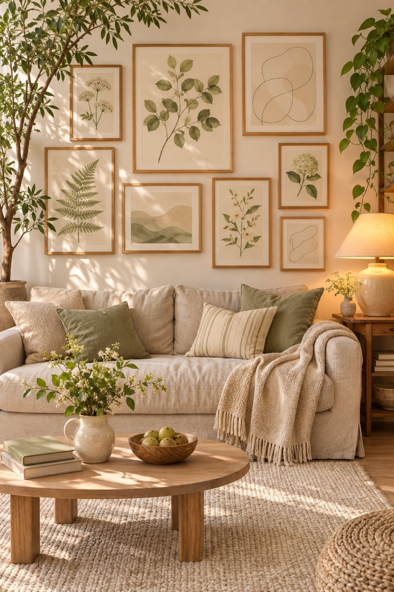
24. Hang a Set of Flower Charts
A set of spring flower prints in matching frames is easy to buy and easy to swap out. Hang them in a loose grid.
Start at the center frame and work outward so the grid stays balanced.
Put a narrow console under it with a plant and a stack of books, as here.
Keep the console no wider than the group of frames.
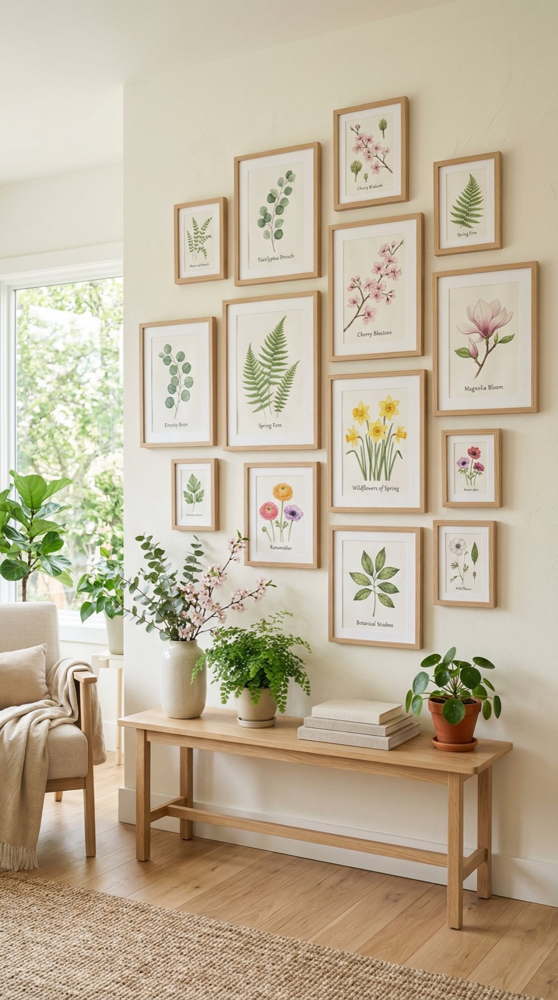
25. Flank a Print With Twin Lamps
Matching lamps make a console feel finished. Put one on each side and center a print between them, as here.
Add a basket of white flowers and one blue-and-white vase for a classic touch.
Keep the lamp bases about level with the bottom of the frame.
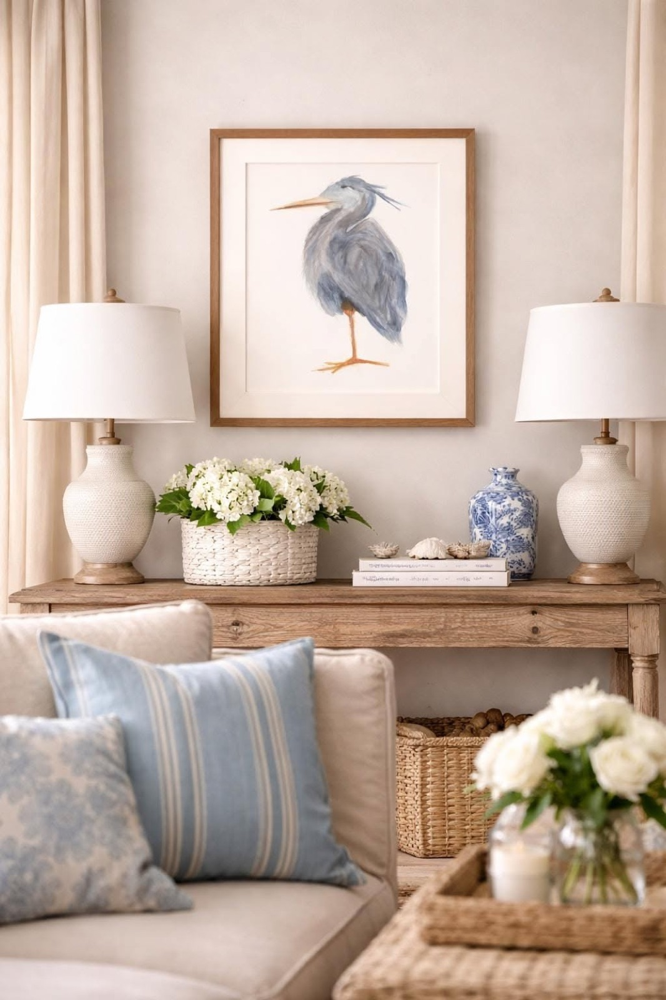
Windows, Rugs and Baskets
26. Fill the Window Ledge With Bulbs
Potted hyacinths and primroses on a sill cost less than cut flowers and last for weeks.
Hang a small basket from the curtain rod for a second layer, as here.
Water both when the top soil feels dry, and let the excess drain before you put pots back on a wood ledge.
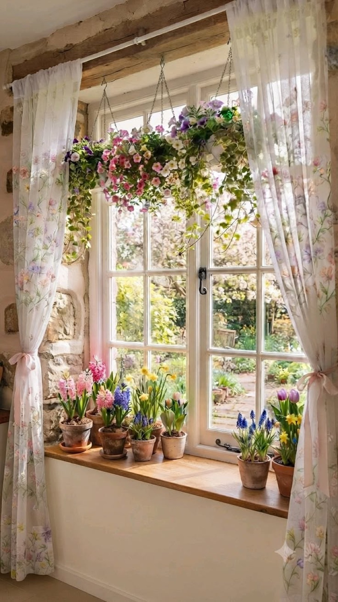
27. Pick a Scalloped Floral Rug
A scalloped rug is spring on the floor. Keep the furniture simple so the pattern does the work.
Choose a rug at least 5 by 8 feet and leave the front legs of the sofa on it.
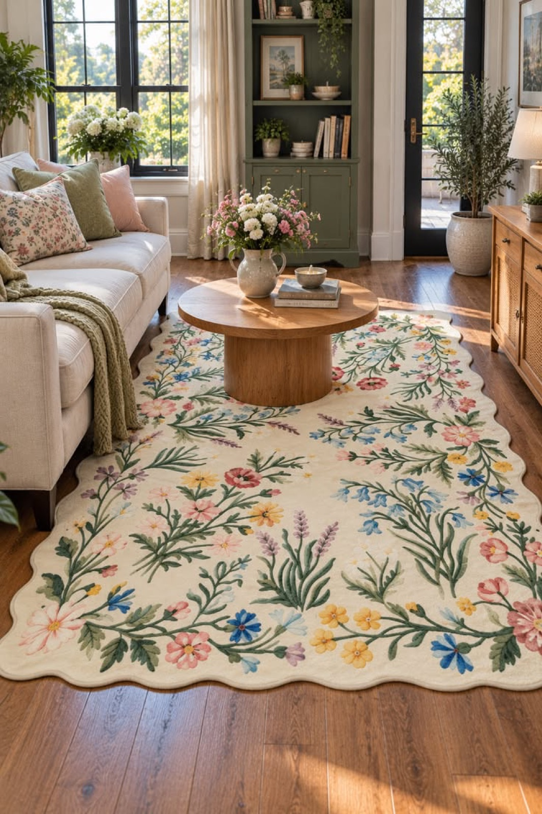
28. Keep a Basket of Blankets by the Sofa
A big basket beside the sofa makes the room look tidy and keeps blankets handy. Choose one 18 to 20 inches wide.
Rotate winter throws out and fill it with lighter cotton ones, as here.
Put a smaller basket next to it for books or magazines.
Pick woven baskets with smooth interiors so they do not snag knits.
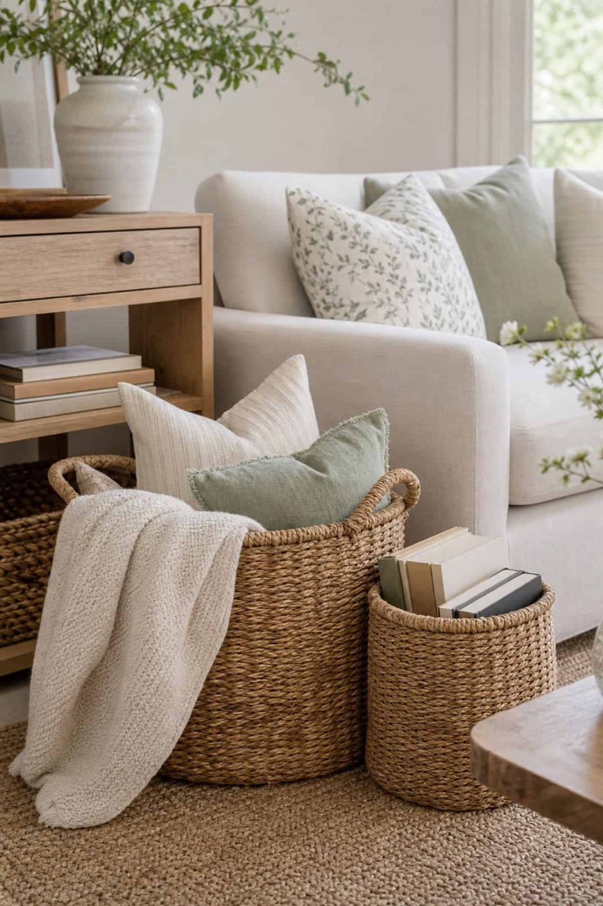
29. Set Two Baskets at Different Heights
A pair of baskets by the sofa hides blankets and magazines. Choose two with different heights so they look collected.
Look for sturdy handles and a rounded base so they do not tip.
Set them on a round rug, as here, to anchor the pair.
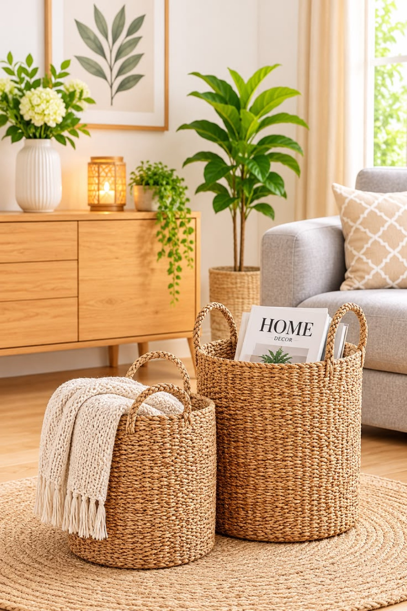
Common Mistakes (and Fixes)
- Mistake: adding spring pieces without removing winter ones. Fix: pack away the heavy throws and dark pillow covers first.
- Mistake: using more than two pastels. Fix: choose two pastels and a neutral.
- Mistake: hanging art too high. Fix: center frames about 57 inches from the floor, or 6 to 8 inches above a sofa.
- Mistake: a rug too small for the seating. Fix: measure so at least the front legs of the sofa sit on it.
- Mistake: flowers left in cloudy water. Fix: change the water every two days and trim the stems.
Where to Start
With one hour, change the pillow covers and the throw, then put fresh flowers where you will see them every day.
Leave paint and wallpaper for later, once you know which colors you keep reaching for.